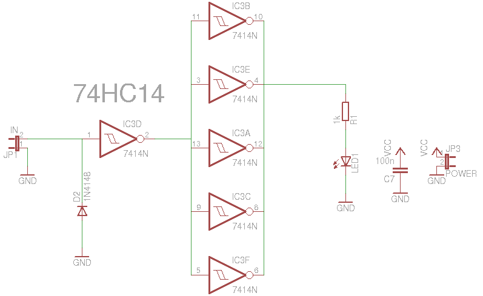

36. Wire detector¶
Status: OK
It is used for detecting mains wire.
Based on this design: http://www.edn.com/article/511304-Detect_live_ac_mains_lines.php
36.1. Schematic¶

36.3. Partlist¶
part value position C7 100n (0.85 1.9) D2 1N4148 (0.85 1.3) IC3 7414N (1.2 1.65) JP1 IN (0.85 1.1) JP3 POWER (0.85 2) LED1 (1.55 1.1) R1 1k (1.5 1.3)